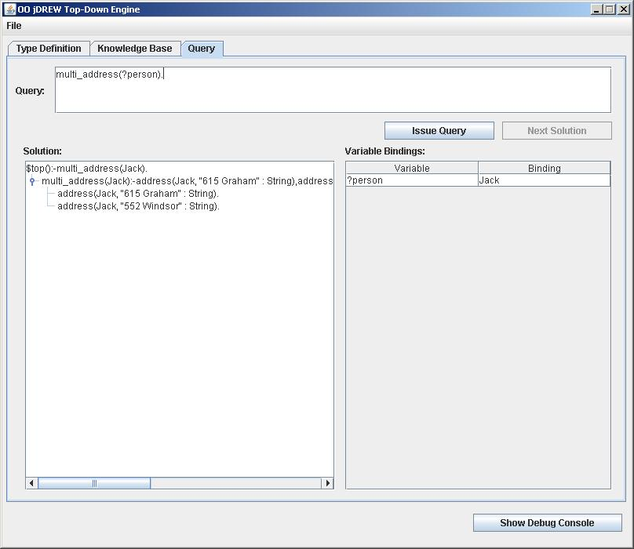

|
OO jDREW Examples in POSL%Rulemulti_address(?personX) :- address(?personX, ?address1 : String), address(?personX, ?address2 : String), naf( stringEqualIgnoreCase(?address1 : String, ?address2 : String) ). %Factsaddress(Jack, "552 Windsor" : String). address(Jack, "615 Graham" : String). %Querymulti_address(?person) |
Last
Updated: By: |
|||||||||||